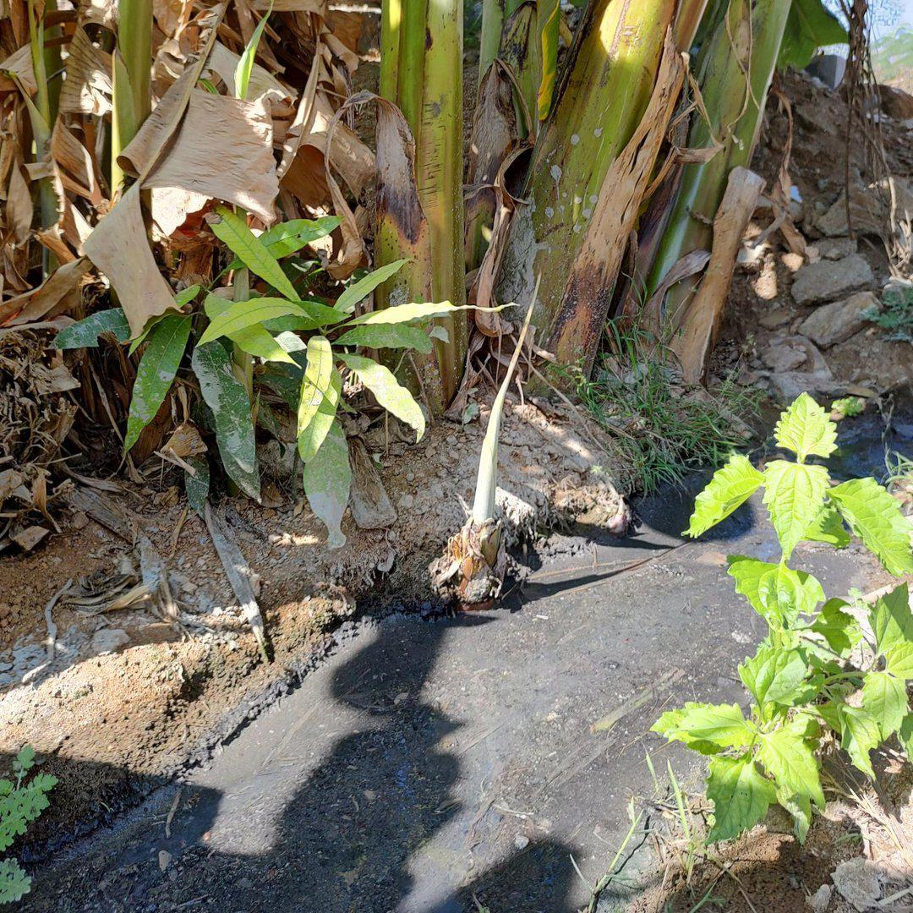
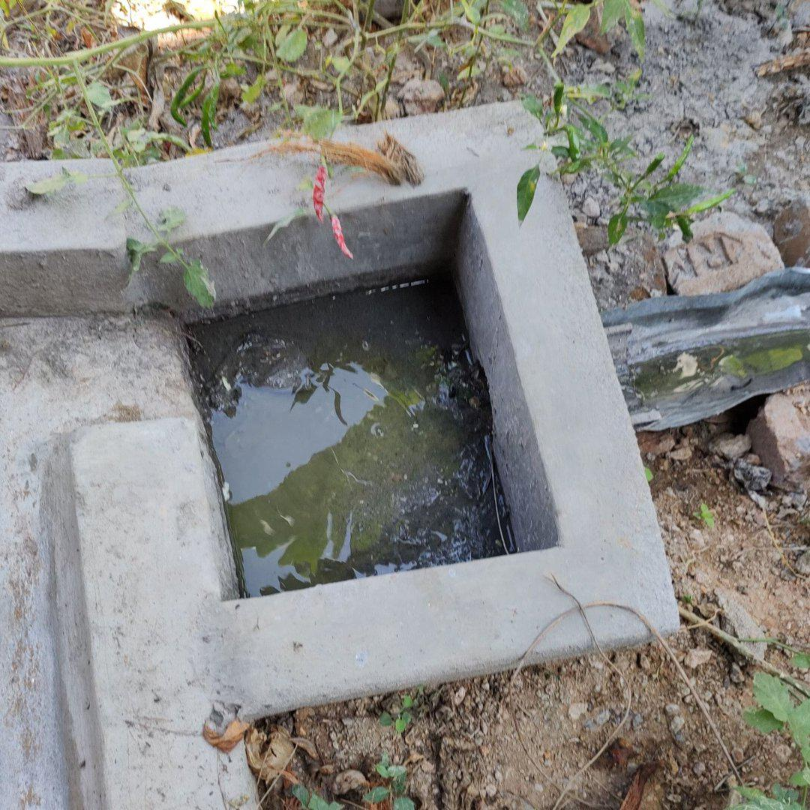
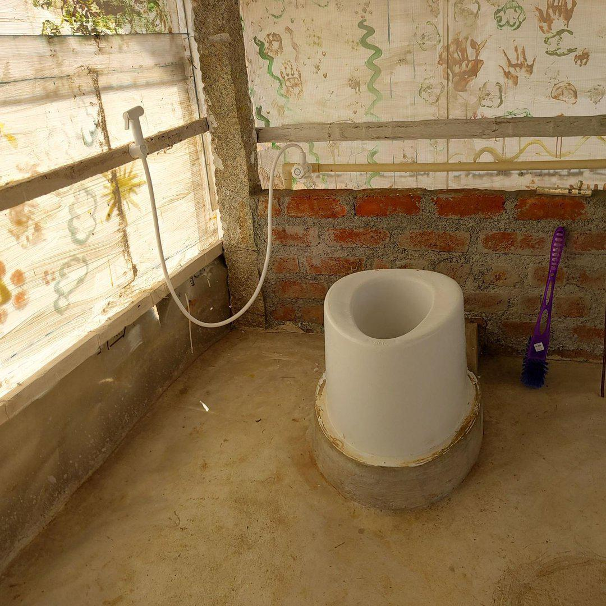

Wastewater Management At Farm Hill
Our 10th grader wrote this as part of an assignment on wastewater management. I hope you agree our experiments with toilets are interesting!
Farm Hill, like any human habitation, generates two varieties of wastewater - gray water and black water. Gray water is produced at sinks, bathrooms and the kitchen, while black water originates from toilets.
Gray Water
The main building
In the main building, we have four bathrooms, two sinks and a plate washing area. The gray water coming from the bathrooms contains only soap and some dirt, so it does not need a digester. It is instead sent into a chamber where the sludge is allowed to settle to the bottom, while the water flows on into a channel dug into the dirt.

This channel feeds an entire grove of banana trees. The banana trees produce bananas for us to eat. Small banana saplings grow around each banana tree. When one banana tree is cut down after producing one bunch of bananas, the saplings grow on and become trees in their turn. The banana grove more or less sustains itself.
However, the sludge still has some BOD, so to take care of this, we spray an enzyme composed of lemon zest, jaggery and water. The enzyme breaks down the organic matter, reducing the BOD of the sludge, and it also prevents any possibility of mosquitoes laying their eggs in the water. Another benefit of the enzyme is that it drastically reduces the smell of the sludge. The sludge is regularly removed and dried, and then used on our vegetable beds.
The kitchen
The kitchen has a sink inside, as well as a washing area outside. The gray water from both of these places goes into a small, open chamber where the sludge settles down, leaving the water on top.

The chamber leads to another chamber, which performs the same function. Both the chambers are cleaned out fairly regularly. The second chamber opens into a long channel made from bent metal sheets. This channel has holes in the bottom to let water drip out and support plants.
At the beginning of the channel, where there is more water, we have a few banana plants. Later on, there are hardier, less thirsty plants, like ivy gourd, Madras thorn, pumpkin, gulmohar etc., and at the end of the channel, where most of the sludge is deposited, there is one banana plant, as well as a few self-supporting vegetable plants like tomatoes.
The density of plants at the end of the channel is very high, due to the large amount of sludge. These plants break down the sludge, and they also reduce the stench and effectively do all the work of managing the sludge deposit. This sludge is also collected, dried and used in garden beds.
The dorm bathrooms
The gray water from the dorm bathrooms and the dorm sinks is taken away from the dorm where people live, through a long pipe. It flows into a large chamber that lets the sludge settle down.
The water then overflows and opens into a long trench, watering a row of Gliricidia plants.
However, now the plants have become independent and can survive without human intervention, a new channel for the pipe is being made. Our plan is for the channel to lead to a brand-new garden bed, which will be used for growing roses. So, effectively, the gray water from the dorm bathrooms will one day become a bunch of roses.
Black water
Farm Hill’s sewage system does not carry waste out of campus. Human waste is processed at the site of deposition, using an innovative biological digestion approach. There are three sets of toilets at Farm Hill, designed one after the other. We had quite a journey and lots of things to learn from designing these toilets. Below is the journey that led to these toilets.
The dorm toilets
At the dorm, the toilet commodes have two separate openings in the bottom, one for urine and one for feces. Each opening leads straight down into a different gunny sack. Each sack contains rice husks, lime, charcoal and a pre-introduced bacterial culture. The idea is that human wastes are broken down by the bacterial cultures.
However, in the first six months, we got complaints of swarms of flies, along with an offensive smell. Another problem was that there was nothing between the users of the toilets and the sacks themselves, so people could see into the pit and that made them uncomfortable. With time, as the biological culture took hold and grew, the smell and flies reduced.
Another problem was with the construction requirement. We had to build the toilets raised off the ground on a stone platform, and then make a separate space for the sacks, and then seal off the space. This was a lot of construction effort. Also, the commodes were custom-made, making them costly and difficult to procure.
The main building
When we designed the toilets in the main building, we wanted to rectify the mistakes made with the dorm toilets. Therefore, we switched to common, everyday commodes, complete with a full flush and a water seal. The normal commodes were cheaper and easier to source. The water seal took care of the flies and the smell problems.
However, we still wanted to reduce the amount of flushing each day, so we introduced a flap just above the water line in the commode, to cover the poop. Our hope was that this would reduce flushing and leave the poop to decompose on its own, starting in the commode and leading to the digester.
The digester chamber for these toilets consists of an inner drum and an outer drum. The waste is ideally processed and filtered in these drums, and clean water flows out through a pipe into a pit that contains some charcoal.

However, the flaps did not function well and had to be removed. This led to people flushing more to push the poop out of sight. The increased flushing sent more water to the digester drums than they could handle.
Soon, the digester drums overflowed, filling the chamber around them with a sludge of poop and water. The commodes started filling up with backed up water.
We opened the digester chambers, looked at the sludge and moved it around a little. The outlet water was still clean and clear. Which meant that the digester, and the bacterial culture was working, even when overwhelmed. Our toilet scientist Ravi made some more enzymes that took care of the accumulated sludge.
The digester system is currently working well, even with the overdose of water, but we fear that this will not last forever. So, we decided to construct a third set of toilets, drawing on all our experiences with toilets so far.
The new dry toilets
Our third set of toilets consists only of a commode and a water faucet with a handgun. The commode sits on top of a pit, which is filled with the digester materials to a depth of about three feet. At the bottom of the commode is the key component - a gravity tipped flap. The flap stops some water above it, and whenever the weight increases a little, it tips over, sending the waste into the pit below. The digester digests the waste and clean water seeps underground.

We have been using these toilets for about two month. These toilets are easy to clean, there is no smell, no flies, are pleasing to the eye, and use only a very small amount of water to function.
The commodes in these toilets and the flaps are imported and are a little bit pricey. While it would be nice if we can reduce the cost, it might not be a large price to pay for the eco friendliness and the ease of use of these toilets.